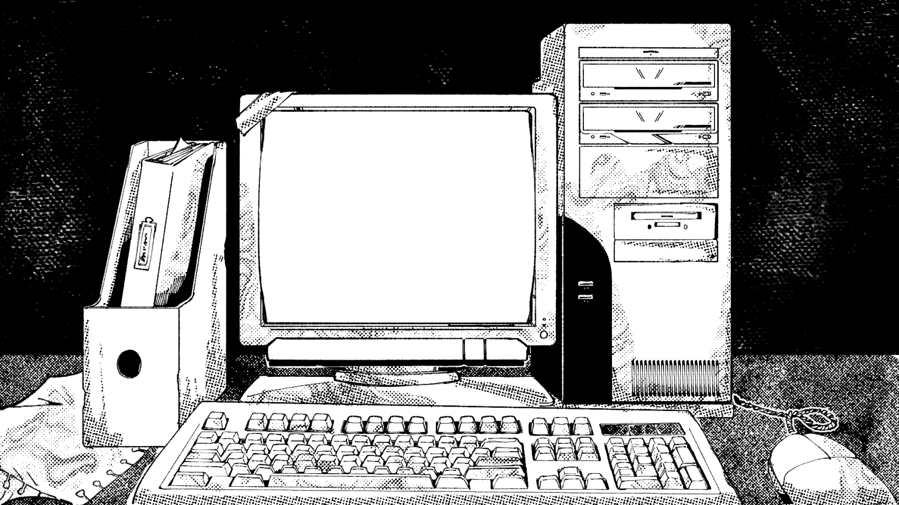
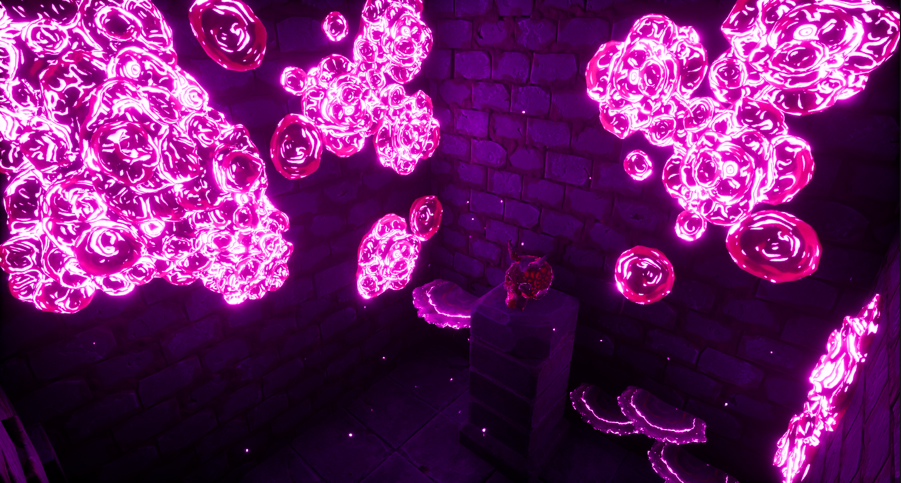

Game designer from LaSalle College Montreal!
Sprite of the Moon

Solo Developer
Reach for the moon while soaring through the skies at insane speeds in this solo-developed UE5 platformer.
Itch PageCorporate Ladder

Game Director
Made in only 5 weeks for a UE5 GameJam, Corporate Ladder is a silly puzzle-solving platformer where you play as a CEO who must make his way back to his office!
Itch PageLoop Automata

Game and Level designer
Play as a robot who constantly repeats the commands you input to escape the factory where he was made! Made in only 4 days for the GMTK 2025 Gamejam using the Godot Engine.
Itch PageNight Shift

Game Designer
In this creepy point-and-click puzzle experience, you must figure out which of three deceased patients is haunting the hospital where you work at. Made in only 2 days for the Gamerella 2025 Gamejam using Unity.
Itch PageEchoes of the Temple

Game and Level designer of the Spore Trial
An immersive first person adventure game where the player must complete different mystical trials to uncover the secrets of the temple. Made in UE5.
Itch Page